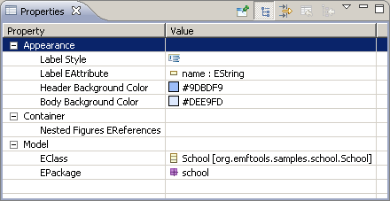

The Graphical Description Editor is a classical EMF generated editor.
It is composed of three main views :
The tree editor view allows to add figures in the graphical description (right click on one node and select the type of figure you want to add).
The outline view is similar to the tree editor view (in read only mode).
The properties view allows to edit the figure's properties.
Here is a example for a ClassFigure :
TODO mak a thumb picture 